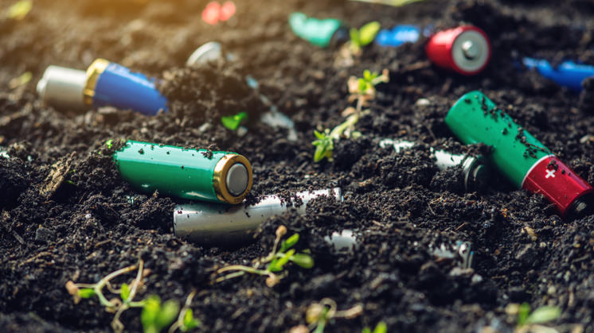

Welcome,
To our website dedicated to raising awareness about soil pollution!
We believe that taking care of our planet's soil is vital for our health and the health of our environment.
Join us in our mission to spread knowledge and promote action to prevent and mitigate soil pollution.
Together, we can make a difference.
What is Soil Pollution?
Let's start by getting a better idea on what exactly does soil pollution mean, We all know the meaning of pollution. But what exactly soil pollution refer is
"The contamination of soil with anamolous concentration if toxic substances". It's a serious environmental concern since it harbours many health hazards.
For example, exposure to soil containing high concentrations of benzene(C6H6) increases the risk of contacting leukaemia.
It is important to understand that all soils contains compunds that are harmful/toxic to human beingsand other living organisms.
However, the concentration of such substances in unpolluted soil is low enough that they do not pose any threat to the surrounding ecosystems. When the concentrations
of one or more such toxic substancesin high enough to cause damage to living organisms, the soil is said to be contaminated.
Causes of Soil Pollution:
We tend to look skywards when talking about pollution, but this problem is not
confined to our skies. The soil in which our fruits and vegetables grow is also suffering its consequences, the effects of which
getting into us directly, for instance, through the aforementioned foodstuff. the time has come to look after what lies under our feet!
Phenomenon such as erosion, loss of organic carbon, increased salt content, compacting, acidification android
chemical pollution are the major causes of current soil degradation. Moreover, the FAO distinguishes between two types of soil pollution.
"Specific pollution" and "Wide pollution". Among the most common causes of soil contamination caused by the human activity,
The FAO highlights industry, mining activities, waste-- which include techinilogical waste and waste water management, farming,
stock breeding the building of urban and transport infrastructure.

Effects of Soil Pollution:
The toxic substances that are deposited on the earth's surface harm our health and well-being and affect
food, water and air quality. The most important effects of soil pollution according to IPBES and the FAO are
indicated below
Damage to health:
Soil pollutants enter our body through the food chain, chain illness to appear. Moreover, the spread of
antibiotics in the environment increases the pathogens' resistance to these drugs.
Poorer harvests:
Soil pollution agents jeopardise world food security by reducing the amount and quality of harvests
Climate change
In the first decade of 21st century, soil degradation released between 3.6 and 4.4 billion tonnes of CO2 into the atmosphere
Water and air pollution:
Soil degradation affect the quality of air and water, particularly in developing countries
Population displacement:
Soil degradation and climate change will have driven between 50 and 700 million people to emigrate by 2050
Species extinction
Soil contamination is one of main causes that could
Possible solutions to Soil Pollution:
Soil pollution is a complex problem that ought to be solved. It is essential
that we all realize how important soil is to us. The eariler we realize this, the better we wil be able to solve the problem of Soil.
It is a complex porblem, and thus, it requires everyone, from an individual to the government, to work in complete unison. Listed below
are few things that could help in reducing soil pollution.
Reduced use of chemical fertilizers:
Chemical fertilizers do more harm than good. While proper amounts could enhance the fertility of Soil,
an excess of ot actually poisons the soil. The excess of chemical fertilizers could pollute the soil in several ways.
It could mess with the pH levels of the soil
Reforestation and Afforestation Should be Promoted
One of the major causes of soil pollution is soil erosion, which is caused due to deforestation.
It is natural that, with an ever-growing population, humankind needs more and more space to expand their civilization. Often, it is achieved at the cost of the health of the soil.
To prevent this from happening, reforestation of a deforested area should be promoted.
Also, afforestation should be promoted and encouraged in the barren lands.
The roots of the plants bind the soil particles together and even capture good microorganisms in the soil.
It also ensures the maintenance of the underground water table.
Recycle and Reuse Products
These steps not only reduce waste generation but also ensure that soil pollution is reduced.
At present, plastic forms a significant portion of the generated waste.
More often than not, this wastes is buried in landfills.
In these landfills, these plastics and other materials decompose slowly and release toxic materials into the soil. These toxic substances are very harmful to the health of the soil and are a major source of soil pollution.
By reusing and recycling things, we would ensure that lesser wastes are dumped in these landfills, and this, in turn, would reduce soil pollution.
Get the locals involved:
In order to ensure that a problem like soil pollution is solved, it is essential that every individual must get involved.
It is with their involvement that things can work out better. Awareness programs could be designed so that people understand soil pollution better.
If people are aware, they will help, even subconsciously.